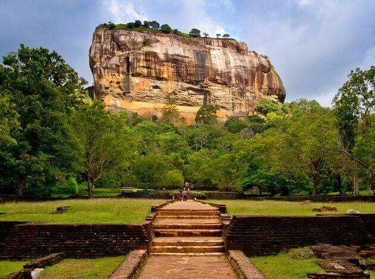
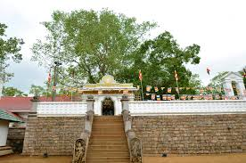
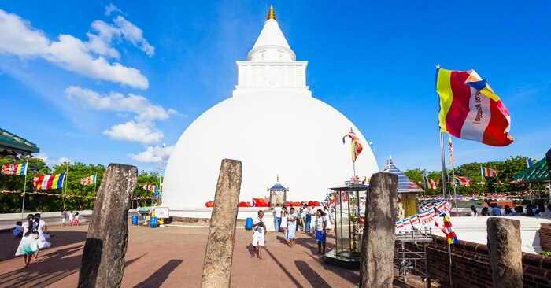
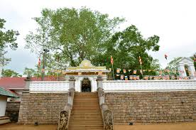
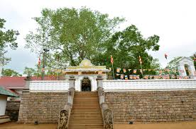
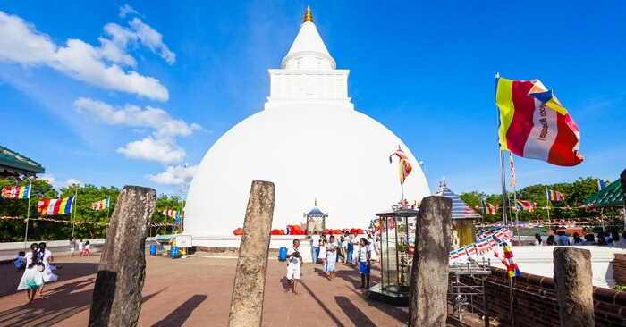
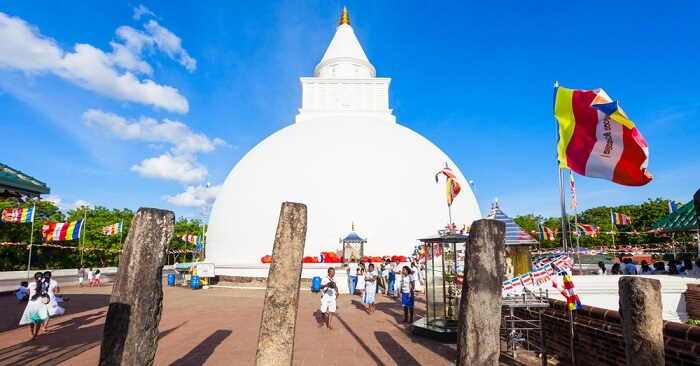

"Historical Places in Sri Lanka"



Sigiriya
Sri Daladha Maligawa
Anuradhapura
Polonnaruwa
Katharagama
Sri Lanka, being a country with such a rich history, has ensured that its heritage is preserved through a variety of means, including natural phenomena such as the Sigiriya Rock and Adam's Peak, as well as man-made monuments and temples. In these historical sites in Sri Lanka, the country's past is maintained with utmost care and zeal. Anyone visiting Sri Lanka should go to at least a handful of these locations to have a better understanding of the country's rich culture and history!.
01.Sigiriya
Sigiriya, also known as Lion Rock or Lion Mountain, is a landmark in central Sri Lanka that has the remnants of an ancient fortification erected on a spectacular monolithic rock pillar in the late 5th century CE. The rock, which rises to an elevation of 1,144 feet (349 meters) above sea level and is 600 feet (180 meters) above the surrounding plain, is so steep that its top overhangs the sides. On the numerous acres of land at the peak, Sinhalese king Kashyapa I (reigned 477–495) erected a palace in the shape of a huge lion, intending it to serve as a deterrent to his adversaries. However, in 495, the monarch was beaten, and the palace was left in ruins. The location quickly become a popular pilgrimage place.However, it has now become a famous tourist destination. The open paws of the lion, one of the few surviving undamaged pieces of the palace, are used to begin the last journey to the summit. 21 apsara rock drawings are also noteworthy (celestial singers and dancers). In 1982, Sigiriya was listed as a UNESCO World Heritage Site.
02.Sri Daladha Maligawa
The Sacred city of Kandy is the final location of the Sacred Tooth Relic of Gautama Buddha. The Sacred relic was brought to Sri Lanka by Princess Hemamala & Prince Dantha from the city of Kalinga in ancient India, during the reign of King Keerthi Sri Meghavarna (Kithsirimevan 301 -328). It became a symbol of Sri Lankan kings and was preciously guarded in a special shrine built within the precincts of the royal palace, wherever the capital was located. The ruins of such edifices remain in ancient capitals of Anuradapura, Pollonnaruwa, Dambadeniya, Yapahuwa, Kurunegala, Kotte and Gampola. While in Kandy the last Kingdom the Temple of the Sacred Tooth Relic continues to be the greatest shrine to receive the utmost veneration of the Buddhist world.The first “Dalada Madura” in Kandy, which housed the Sacred Tooth Relic was built by King Wimaladharmasuriya the first during his reign from year 1592 – 1604. History reveals that this was destroyed by the Portuguese during their invasions. The second temple was built in the same location by King Rajasinghe the Second during his reign from 1635 – 1687, which was burnt by the Dutch. The Dalada history says in year 1687 King Wimaladharmasuriya the Second built a 3 storeyed Dalada Madura and performed Dalada rituals with great devotion but with time the building was decayed and destroyed. Later his son King Sri Veera Parakrama Narendrasinghe who reigned from 1707 – 1739 built the 2 storeyed Dalada Madura which one can see today. The South Indian Kings who ruled the country from Senkadagala renovated and protected the shrine which was built by King Narendrasinghe.The temple was finely renovated and beautified by King Keerthi Sri Rajasinghe to its present appearance. Paththirippuwa or the Octagonal Pavilion was constructed by King Sri Wickrama Rajasinghe who reigned from year 1798 – 1815. Protecting of the Sacred Tooth Relic and conducting religious rituals without a break is being carried out to the present day under the strict surveillance of the three chief custodians of the Tooth Relic, the most Venerable Mahanayake theros of Malwatta and Asgiriya chapters and the lay custodian, the Diyawadana Nilame.
03.Anuradhapura
Anuradhapura is a historically significant city in Sri Lanka, with several heritage monasteries, palaces, and monuments. It is famous for its massive dagobas, or brick stupas, as well as historic ponds and lakes and spectacular temples. In 377 BC, the city was created as Sri Lanka's first capital. Anuradhapura also grew to prominence as a political and economic powerhouse at this period.The Jaya Sri Maha Bodhi is a sacred Bo tree, or Ficus religiosa, that stands in the Mahamewna Gardens in Anuradhapura, Sri Lanka. Not only is it the closest authentic living link to Gautama Buddha, it is also the oldest human-planted tree in the world with a known planting date and a recorded history.About 2,600 years ago, Lord Gautama Buddha sat with his back against an Esathu tree on the banks of the Neranjana River in Bodhgaya, India. It was at this moment, as he sat against the tree, that the Buddha is said to have achieved enlightenment. In doing so, the tree also gained a venerated status. It became known as the Bodhi tree, and pilgrims came to see it even within the lifetime of the Buddha. Later, in 236 BC, the Buddhist nun Sanghamitta Maha Theri was sent by Emperor Asoka from India to Sri Lanka. With her, she carried a southern branch of the original sacred fig. This branch was ceremoniously presented to Devanampiya Tissa, one of the earliest kings of Sri Lanka whose reign was notable for the arrival of Buddhism. In 288 BC, Tissa planted the branch of the Bodhi tree in his Royal Park in Anuradhapura. The Jaya Sri Maha Bodhi, as it became known, has since been cared for and protected by Buddhist monks and dedicated kings. Statues, water canals, golden fences, and walls have been built around the tree over the centuries, and many vows and offerings have been made by Buddhists at the foot of the sacred fig.
04.Polonnaruwa
Polonnaruwa Vatadage is a well-preserved Vatadage located in the famed Dalada Maluwa quadrangle of Polonnaruwa, a historic city of ruins. In Sri Lanka, vatadages are traditional Buddhist constructions. These are circular structures with beautiful stone carvings and a wooden roof made of stone and brick. They were constructed to safeguard stupas. There are now 10 Vatadages in Sri Lanka that represent the country's history, with the Polonnaruwa Vatadage being the most prominent. Polonnaruwa was first established as a military post by the Sinhalese kingdom. And, it was renamed Jananathamangalam by the Chola dynasty after their successful invasion of the country in the 10th century. Under this period systematic destruction of the Buddhist civilisation took place in the northern plains of Sri Lanka. Raja Raja Chola I built Vanavan Mahadevisvaram, a Shiva temple at Polonnaruwa named after his queen, which presently is known as Siva Devale. The temple among other contained Ganesha and Parvati statues of bronze. north and central parts of Sri Lanka was under this period ruled under Rajendra Chola I directly as a Chola province. However, following the year 1070 AD ended the Chola rule in the island, and Polonnaruwa was captured by Vijayabahu I of Polonnaruwa also known as Vijayabahu the great. Starting from Mahanagakula on the south of the Walawe river, Vijayabahu dispatched three armies to attack Polonnaruwa from three fronts. One army was sent along the western shore of the country to the port of Mahathittha to deal with any reinforcements arriving from South India. Afterwards, part of this army moved towards Polonnaruwa and attacked from the north-west. A second army was sent from the east across Magama to attack Polonnaruwa from the east. The third and main force advanced across the country, led by the king. Surrounded by these three armies, Polonnaruwa was besieged for seven months before king Vijayabahu’s forces entered the city. In 1070, Vijayabahu became the ruler of Polonnaruwa. At that time Sri Lanka was known as Thambapanni. Trade and agriculture flourished under the patronage of the famous grand son of King Vijayabahu I of Polonnaruwa, king Prakramabahu the Great, who was so adamant that no drop of water falling from the heavens was to be wasted and each was to be used toward the development of the land.[citation needed] Hence, irrigation systems that are far superior to those of the Anuradhapura Age were constructed during Parakramabahu's reign – systems which to this day supply the water necessary for paddy cultivation during the scorching dry season in the east of the country. The greatest of these systems is the Parakrama Samudra or the Sea of Parakrama which was also used as a large sea going ship anchorage via the Mahaweli River. The Kingdom of Polonnaruwa was completely self-sufficient during King Parakramabahu's reign. With the exception of his immediate successor, Nissankamalla I, the other monarchs of Polonnaruwa were not as strong-willed and were prone to picking fights within their own court.[citation needed] They also went on to form more matrimonial alliances with stronger South Indian kingdoms until these matrimonial links superseded the local royal lineage. This prompted an invasion by the Aryacakravarti dynasty war lord Kalinga Magha in 1214, which saw the complete destruction of the metropolises of Anuradhapura and Polonnaruwa by burning. Kalinga Magha by the time of his defeat had destroyed the Buddhist civilization in north of Sri Lanka.
05.Katharagama
Kiri Vehera is an ancient stupa situated in Kataragama, Sri Lanka. This stupa probably dates back to the 3rd century BC and is believed to have been built by King Mahasena, a regional ruler of Kataragama area. One of the most popular Buddhist pilgrimage sites in the country, Kiri Vehera is among the Solosmasthana, the 16 most sacred Buddhist pilgrimage sites of ancient Sri Lanka. This stupa which is 95 ft. in height with a circumference of 280 ft. is located 800 m North to the famous Ruhunu Maha Kataragama Devalaya. Venerable Kobawaka Dhamminda Thera is the present Chief Prelate of Kirivehera Rajamaha Viharaya.Many Sinhala Buddhists of Sri Lanka believe that Kataragama deviyo is a guardian deity of Buddhism and he is the presiding deity of Kataragama temple. Kataragama is one of the 16 principal places of Buddhist pilgrimage to be visited in Sri Lanka. According to the chronicle of Sri Lankan history, the Mahawamsa, when the Bo sapling of Bodhi Tree, under which Gotama Buddha attained enlightenment in North India was brought to the city of Anuradhapura 2,300 years ago, the warriors or Kshatriyas from Kataragama were present on the occasion to pay homage and respect.The Bo tree behind the Kataragama temple is one of the eight saplings (Ashta Phala Ruhu Bodhi) of Sri Maha Bodhiya in Anuradapura, Sri Lanka. This tree was planted in the 3rd century BC.
The Buddhist Kiri Vehera Dagoba which stands in close to the Kataragama devalaya was built by the King Mahasena. According to the legend, Buddha, on his third and the last visit to Sri Lanka, was believed to have met King Mahasena, who ruled over the Kataragama area in 580 BC. It is said that King Mahasena met Buddha and listened to his discourse. As a token of gratitude, the Dagoba was built on that exact spot where it now stands. Thus the local Sinhalese Buddhists believe that Kataragama was sanctified by Buddha.
 

 
